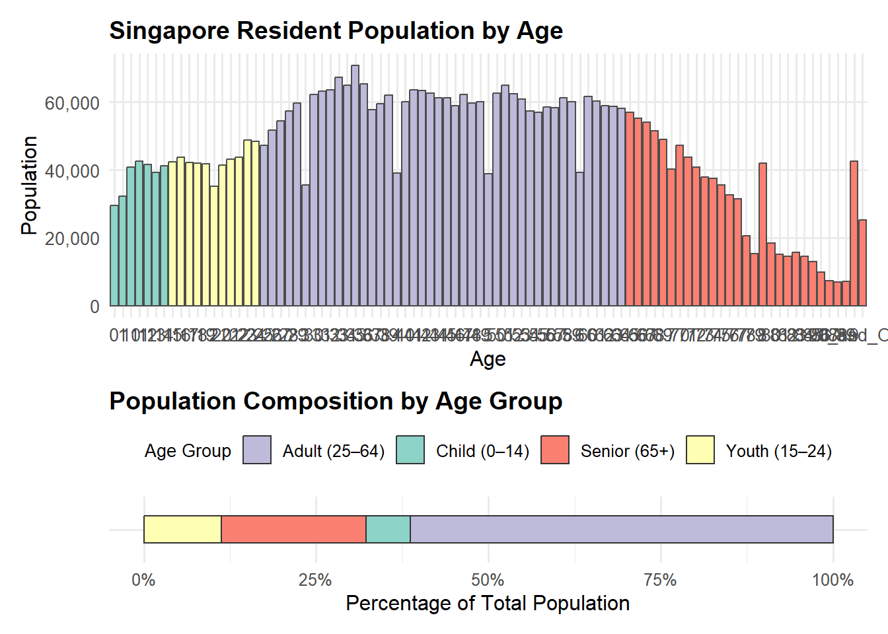

pacman::p_load(tidyverse, ggrepel, ggthemes, patchwork, ggridges, scales)Take-Home Exercise 1 (Part 2)
Note
This Netlify page was originally designed and produced by LIU CHIH-YUAN for his Take-Home Assignment 1.
I will be providing a critic on three good design principles and three areas for further improvement on his work. I will also preare the makeover version of the data visualisation.
Exploratory Analysis of Age and Gender Distribution Across Singapore Planning Areas (2024)
1. Overview
The 2024 dataset from Singapore’ Department of Statistics provides resident population data by planning area, subzone, age, and sex.
1.1 Objective
To perform structured exploratory data analysis to uncover insights on demographic distribution across regions.
2. Getting Started
2.1 Load Packages
The R packages used in this EDA are as follows:
tidyversecore R package for data science (contains essential packages such as ggplot2)ggrepelfor ggplot2 to repel overlapping text labelsggthemesextra ggplot themespatchworkcombine ggplotggridgesfor ridgeline plotsscalescustomer number formatting
2.2 Import Data
df <- read.csv("Dataset/respopagesex2024.csv")common_theme <- theme_minimal(base_size = 16) +
theme(
axis.text = element_text(size = 18),
axis.title = element_text(size = 20),
plot.title = element_text(size = 18, face = "bold"),
legend.text = element_text(size = 17),
legend.title = element_text(size = 16)
)2.2.1 Check Missing Values
glimpse(df)Rows: 60,424
Columns: 6
$ PA <chr> "Ang Mo Kio", "Ang Mo Kio", "Ang Mo Kio", "Ang Mo Kio", "Ang Mo K…
$ SZ <chr> "Ang Mo Kio Town Centre", "Ang Mo Kio Town Centre", "Ang Mo Kio T…
$ Age <chr> "0", "0", "1", "1", "2", "2", "3", "3", "4", "4", "5", "5", "6", …
$ Sex <chr> "Males", "Females", "Males", "Females", "Males", "Females", "Male…
$ Pop <int> 10, 10, 10, 10, 10, 10, 10, 10, 30, 10, 20, 10, 20, 30, 30, 10, 3…
$ Time <int> 2024, 2024, 2024, 2024, 2024, 2024, 2024, 2024, 2024, 2024, 2024,…colSums(is.na(df)) PA SZ Age Sex Pop Time
0 0 0 0 0 0 2.3 Data Processing
2.3.1 Checking Column Types
str(df)'data.frame': 60424 obs. of 6 variables:
$ PA : chr "Ang Mo Kio" "Ang Mo Kio" "Ang Mo Kio" "Ang Mo Kio" ...
$ SZ : chr "Ang Mo Kio Town Centre" "Ang Mo Kio Town Centre" "Ang Mo Kio Town Centre" "Ang Mo Kio Town Centre" ...
$ Age : chr "0" "0" "1" "1" ...
$ Sex : chr "Males" "Females" "Males" "Females" ...
$ Pop : int 10 10 10 10 10 10 10 10 30 10 ...
$ Time: int 2024 2024 2024 2024 2024 2024 2024 2024 2024 2024 ...We see column Age is “chr” (character) instead of numeric, let’s check why by finding the unique value of column Age
sort(unique(df$Age)) [1] "0" "1" "10" "11" "12"
[6] "13" "14" "15" "16" "17"
[11] "18" "19" "2" "20" "21"
[16] "22" "23" "24" "25" "26"
[21] "27" "28" "29" "3" "30"
[26] "31" "32" "33" "34" "35"
[31] "36" "37" "38" "39" "4"
[36] "40" "41" "42" "43" "44"
[41] "45" "46" "47" "48" "49"
[46] "5" "50" "51" "52" "53"
[51] "54" "55" "56" "57" "58"
[56] "59" "6" "60" "61" "62"
[61] "63" "64" "65" "66" "67"
[66] "68" "69" "7" "70" "71"
[71] "72" "73" "74" "75" "76"
[76] "77" "78" "79" "8" "80"
[81] "81" "82" "83" "84" "85"
[86] "86" "87" "88" "89" "9"
[91] "90_and_Over"Here most likely it’s the 90_and_over causing it to be a str not int
2.3.2 Creating a Numeric Age Column
df <- df %>%
mutate(
AgeNum = suppressWarnings(
ifelse(Age == "90_and_Over", 90, as.numeric(Age))
)
)Since we observed people over 90 years old are categorized 90_and_above instead of actual numbers, for the ease of plotting we hereby create a new column AgeNum
2.3.3 Creating Age Grouping
df <- df %>%
mutate(
AgeGroup = case_when(
AgeNum <= 12 ~ "Child",
AgeNum <= 24 ~ "Youth",
AgeNum <= 64 ~ "Adult",
TRUE ~ "Senior"
)
)We create a new column AgeGroup for future EDA purposes
str(df)'data.frame': 60424 obs. of 8 variables:
$ PA : chr "Ang Mo Kio" "Ang Mo Kio" "Ang Mo Kio" "Ang Mo Kio" ...
$ SZ : chr "Ang Mo Kio Town Centre" "Ang Mo Kio Town Centre" "Ang Mo Kio Town Centre" "Ang Mo Kio Town Centre" ...
$ Age : chr "0" "0" "1" "1" ...
$ Sex : chr "Males" "Females" "Males" "Females" ...
$ Pop : int 10 10 10 10 10 10 10 10 30 10 ...
$ Time : int 2024 2024 2024 2024 2024 2024 2024 2024 2024 2024 ...
$ AgeNum : num 0 0 1 1 2 2 3 3 4 4 ...
$ AgeGroup: chr "Child" "Child" "Child" "Child" ...3. Exploratory Data Analysis
EDA 1: Population by Age / Age Group
p1 <- ggplot(df, aes(x = AgeNum, y = Pop)) +
stat_summary(fun = sum, geom = "bar", fill = "steelblue") +
labs(title = "Total Population by Age", x = "Age", y = "Population") +
scale_y_continuous(labels = label_comma()) +
common_theme
p2 <- df %>%
group_by(AgeGroup) %>%
summarise(Pop = sum(Pop)) %>%
ggplot(aes(x = AgeGroup, y = Pop, fill = AgeGroup)) +
geom_bar(stat = "identity") +
labs(title = "Population by Age Group", y = "Population") +
scale_y_continuous(labels = label_comma()) +
common_theme
(p1 / p2) + plot_layout(heights = c(1.2, 1))
Insights:
- Most residents fall between ages 25 to 54
- Youth population is shrinking, suggesting long-term labor sustainability issues
- Senior population (65+) rising, indicating growing need for eldercare and aging population
3 Good Design Principles
Good Data-Appropriate Chart Type (Total Population by Age & Population by Age Group)
A Bar Chart was used to show the visualization of the population count for each discrete age. This is apprpriate for numerical variable like age or age bands. Readers can easily assess relative sizes, which support the effective visual comparison (i.e. comparing which age has a higher count).
The second plot on “Population by Age Group” has banded the ages into 4 Age Groups, namely: Adult, Child, Senior and Youth. This helps to condense the chart into age categories for quick selection if one intends to zoom in to a particularly age group for analysis.
Assessment: I would give this a rather high score on the clarity scale.
Clear Labelling and Minimal Chart Junk
- The Axis Labels were simple and understanbleable. For both plots, the Y-axis population intervals with the use of horizontal grid lines allow for clear relative reference and comparisons. Furthermore the grid line are in lighter tone of grey which does not distract the viewer.
- With no excessive gridlines, background noise, or distracting embellishments, Chih Yuan was able to apply the principle of minimizing “non-data ink” to maintain visual clarity.
- [**Assessment**]{.underline}: I would give this a good score on the clarity scale.- Functional Simplicity
- The plot avoids excessive color schemes, 3D effects, or elaborate design, ensuring that the focus remains solely on the dataset itself. The use of colours also made the visual easier to identify age groupings which confusion, especially avoiding "colour blind" schemes.
- It can be observed that Chich Yuan has likely prioritized clarity over unnecessary decoration is a strong point.EDA 2: Gender Analysis
p3 <- ggplot(df, aes(x = Sex, y = Pop, fill = Sex)) +
stat_summary(fun = sum, geom = "bar") +
labs(title = "Population by Gender", x = NULL, y = "Population") +
scale_y_continuous(labels = label_comma()) +
common_theme
p4 <- df %>%
group_by(Sex, AgeGroup) %>%
summarise(Pop = sum(Pop)) %>%
ggplot(aes(x = AgeGroup, y = Pop, fill = Sex)) +
geom_bar(stat = "identity", position = "dodge") +
labs(title = "Gender Distribution by Age Group", y = "Population") +
scale_y_continuous(labels = label_comma()) +
common_theme
(p3 / p4) + plot_layout(heights = c(1.2, 1))
Insights:
- Gender balance is nearly equal overall
- Female dominates in the senior age group, likely due to higher life expectancy
EDA 3: Population Structure by Age / Gender
df_pyramid <- df %>%
filter(AgeNum <= 90) %>%
mutate(Pop = ifelse(Sex == "Males", -Pop, Pop))
p6 <- ggplot(df_pyramid, aes(x = AgeNum, y = Pop, fill = Sex)) +
geom_col(width = 1) +
coord_flip() +
labs(title = "Population Pyramid", x = "Age", y = "Population") +
scale_y_continuous(labels = label_comma()) +
common_theme
p7 <- df %>%
group_by(Sex, AgeGroup) %>%
summarise(Pop = sum(Pop)) %>%
ggplot(aes(x = AgeGroup, y = Pop, fill = Sex)) +
geom_bar(stat = "identity", position = "dodge") +
labs(title = "Age Group Distribution by Gender", y = "Population") +
scale_y_continuous(labels = label_comma()) +
common_theme
(p6 / p7) + plot_layout(heights = c(1.3, 1))
Insights:
- Pyramid shows narrowing base wider top, typical for aging societies
- Adults dominate across both genders, seniors are the second largest group
4. Conculsion
- Singapore faces a demographic shift towards aging, requiring proactive planning
- Uneven population spread across subzones and planning ares calls for smart urban development
- This EDA provides clear insights and serves as baseline for policy design, urban planning, and future modelling